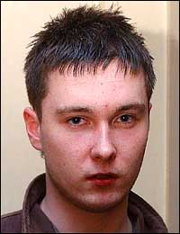

Andy Nicholson
Baixo (2002–2006)
Andy Nicholson é um músico inglês, mais conhecido por ser o ex-baixista da banda de Sheffield, Arctic Monkeys. Em 2009, ele se tornou o baixista do ex - Milburn vocalista Joe Carnall da banda The Book Club, mas saiu mais tarde naquele ano para se juntar ao Reverend and the Makers.

Glyn Jones
Vocal e guitarra rítmica (2002)
o primeiro vocalista do Arctic Monkeys foi Glyn Jones. No início da banda, Alex Turner era muito tímido e não queria assumir os vocais, então acabou sobrando para o cantor. Mas isso durou muito pouco porque, já nos primeiros ensaios, Jones desencanou da ideia e abandonou o projeto. Aí não teve jeito, Turner teve que vencer a timidez e ser o porta-voz do grupo.